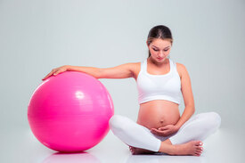

Nossos Serviços
Pilates clássico
Tem como objetivo preservar a técnica legada por Joseph Pilates, mantendo-se fiel aos seus princípios, linguagem, valores, equipamentos e filosofia.

Pilates para gestante
Os exercícios de Pilates para gestante são adaptados para cada trimestre e para a condição física de cada mulher.
Pilates funcional
O Pilates funcional envolve a execução de exercícios que utilizam equipamentos de fácil mobilidade ou apenas o próprio corpo.